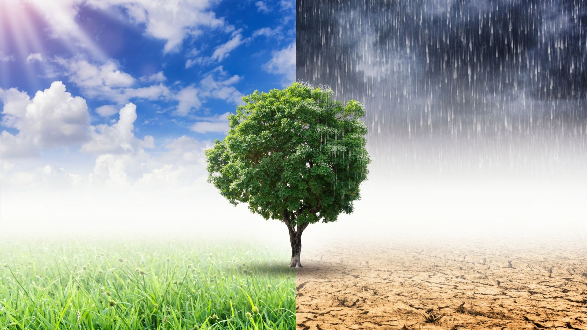
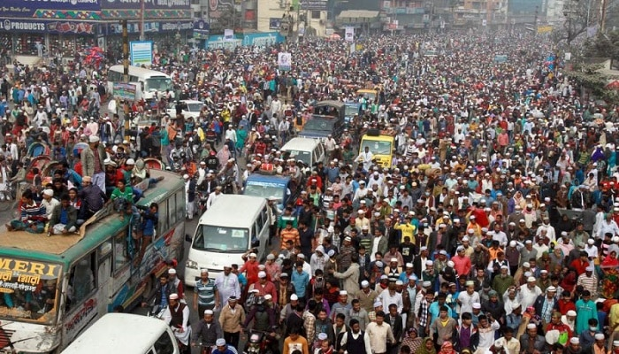
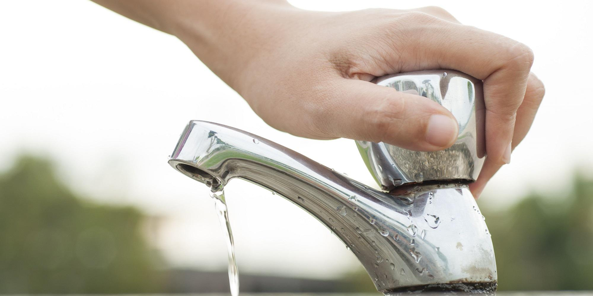
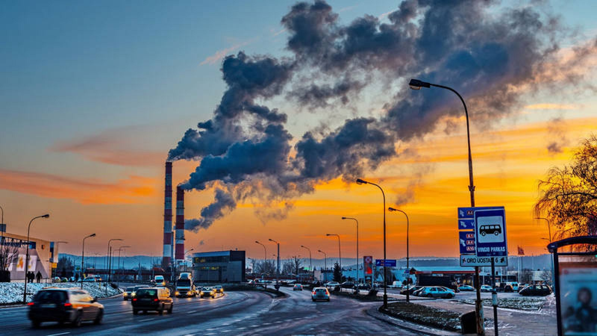
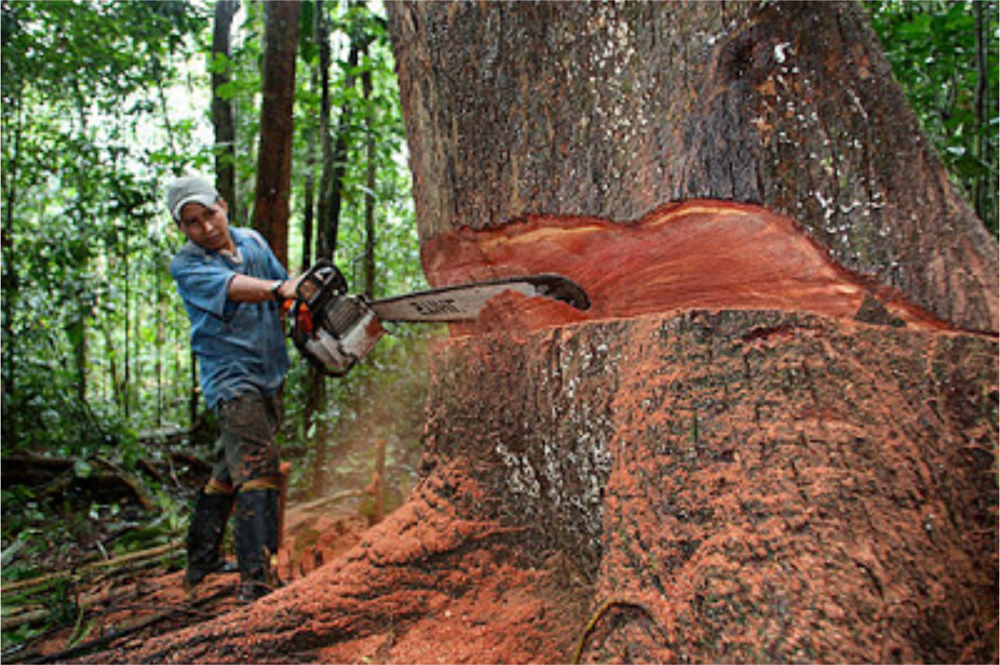

Cambio Climático

Es el problema ambiental más urgente del planeta.
Se refiere a los cambios de temperatura producidos a largo plazo y es un proceso que ocurra en la Tierra durante ciclos que duran miles e inlcuso millones de años.
Los cambios se producen por caussas naturales pero también por la acción dle ser humano, sobre toto a partir del siglo XIX
Superopoblación

Se produce cuando hay una elevada densidad de personas en un entorno, lo que repercute sobre el entorno, los recursos naturales y, por tanto, la calidad de vida de la población llegando inlcuso a generar situaciones de necesidad y conflictos.
Consumo de agua

El agua es un bien tan necesario como limitado, aunque se use como si nunca se fuera a acabar.
Por ello es importante reflexionar sobre el consumo que se hace de este recurso y planear una gestión más eficiente y sostenible que la acutal
De esto depende garantizar el suministros de agua apra las próxmimas generaciones
Contaminación

Se habla de contaminación cuando en un entorno hay elementos o sustancias que normalmente no deberían de estar en él y afectan al equilibrioo del ecosistema.
Los agentes que producen la contaminación pueden ser físicos, químicos o biológicos.
Perjudican al entorno natural cuando se presentan en concentraciones muy elevadas.
Deforestación

Es un proceso realizado generalmente por el ser humano, mediante el cual se elimina una superficie forestal, es decir, los bosques y las plantas de una zona son destruidos por la acción del hombre.
La industria de la madera, de la contrucción, las explotaciones mineras en el subsuelo, las empresas fabricantes de papel y la agricultura a gran escala suelen estar detrás de la destrucción de los bosques y las selvas.
Otros Problemas
- Necesidad de usar energías Renovables
- Erradicar la sobrepesca, aumentar las reservas marinas y proteger los océanos
- Gestión de residuos
- Pérdida de biodiversidad